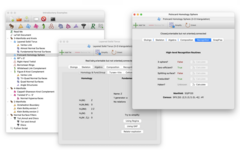
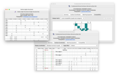
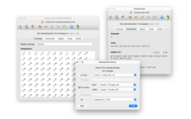
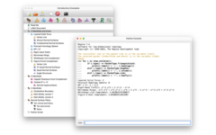

22 Jun 2022: Added packages for openSUSE Leap 15.4. Follow the install links for details.
11 May 2022: Added packages for Fedora 36. Follow the install links for details.
9 May 2022: The detailed C++/Python guide for converting your code to Regina 7 is now complete. Better late than never! You can read all the details here.
10 December 2021: Regina 7.0 is out! This is possibly the biggest overhaul that Regina has had in its 20+ year history. You can read all about what's new, or just go ahead and download it. Either way, you should read these important notes regarding backward-incompatible changes in the new release.
For 3-manifolds, it includes high-level tasks such as 3-sphere recognition, connected sum decomposition and Hakenness testing, comes with a rich database of census manifolds, and incorporates the SnapPea kernel for working with hyperbolic manifolds. For 4-manifolds, it offers a range of combinatorial and algebraic tools, plus support for normal hypersurfaces. For knots and links, Regina can perform combinatorial manipulation, compute knot polynomials, and work with several import/export formats.
Regina comes with a full graphical user interface, as well as Python bindings and a low-level C++ programming interface.
See the users' handbook for a detailed list of features.
|  |  |
| Studying 3-manifold triangulations |
Normal surfaces and angle structures |
|  |  |
| Knots and links |
In-built Python scripting |
The following downloads are available:
|
All direct downloads come with SHA-1 checksums and SHA-256 checksums, signed with Ben Burton's GPG key.
If you encounter any problems when you run Regina, you can check the
troubleshooting page to
see if your problem is discussed there. You also most welcome
to contact us for help.
Mac
Regina runs natively on both Intel and Apple Silicon machines.
It ships with its own copy of Python 3, which is bundled inside
Regina's macOS app.
You can download Regina either from this website, or via the App Store (for free of course). Not sure which? Start with the App Store version (but read below).
macOS version Website download App store Monterey (12)
Big Sur (11)
Catalina (10.15)Download here
There are some minor differences between the website and App Store versions. The App Store version:
Sandboxing is a security measure that comes with all App Store downloads: it ensures that apps only access files that you explicitly choose through the graphical file dialogs (Open, Save, etc.). For Regina, this means that when you open a Python console or run command-line tools (regina-python, regfiledump, etc.), the only personal files you can access are those in your Downloads folder. You can still access world-readable files, such as those in your Applications folder.
Windows
Regina on Windows uses a standard point-and-click installer.
Regina now offers separate 64-bit and 32-bit versions. Almost all modern machines are 64-bit, and this is probably the version you want. If you are not sure:
Windows version 64-bit installer 32-bit installer Windows 10
Windows 8.1Download Download
These packages should work with Windows 11 also, but Ben has not yet been able to access a suitable testing environment. Any reports of success and/or failure are welcome.
At some point in the very near future, Regina will stop shipping 32-bit Windows packages. If you need a 32-bit installer, please mail Ben so he knows there is still need for it.
When running the installer you may see a security warning,
such as “Microsoft Defender SmartScreen prevented an
unrecognized app from starting ...”, or a message from
SmartScreen Filter that
“This program might harm your computer”.
This is because Microsoft has not added Regina to its database of
known applications.
Click More info or More options
and you should be able to run the installer anyway.
GNU/Linux
You can download ready-made packages for several GNU/Linux distributions
through Regina's online package repositorites.
These repositories integrate with your native package manager
(apt, dnf/yum, zypper, etc.)
to help you keep Regina up-to-date automatically.
For instructions on setting up Regina's package repositories, click on the Install link for your system in the table below.
Regina's GNU/Linux packages are named regina-normal (to avoid conflicting with the other Regina).
Distribution Versions Architectures Instructions Arch Linux Rolling release x86_64 Install Debian 11.x (bullseye) amd64
arm64
i386Install 10.x (buster) amd64
i386unstable (sid) Everything Fedora 36
35
34
33aarch64
x86_64Install openSUSE Leap 15.4
Leap 15.3
Leap 15.2aarch64
x86_64Install Ubuntu 21.10 (impish)
21.04 (hirsute)
20.04 LTS (focal)amd64
arm64Install 18.04 LTS (bionic) amd64
i386
Architectures:
For older versions of GNU/Linux:
For newer versions of GNU/Linux:
For other GNU/Linux distributions:
System Instructions PyPI Install
Of course, whilst the packages are written to work with any modern version
of SageMath, your experiences might vary (particular with an older SageMath
and/or operating system). Follow the instructions link above for details.
iPad
The iPad app is currently in hiatus. It has not been updated since before the
pandemic began, and there is a lot of rewriting to do.
Hopefully Ben will have time to do this some time during 2022.
Source code
For other systems not listed above, you will need to build Regina from its source code.
You can download the source code here.
Please see the separate page on building Regina for instructions on how to build Regina and what libraries and tools you will need to have installed.
You can read the handbook from within Regina by selecting Help → Regina Handbook from the menu. You can also read it here online.
You can read the API documentation by selecting Help → Python API Reference from the menu. You can also read it here online.
Regina has had the largest overhaul in its 20+ year history. Some of these changes break backward compatibility, and everyone should read this quick overview of the most important changes.
In particular: the file format has changed, the native C++ interface has been reworked to take advantage of modern language features, and for the first time, Python is now a “first class citizen” with full access to essentially all of Regina's native code.
Beyond all this, new features include:
Some features have been removed:
For Python and C++ programmers:
Many others have been of assistance with this project, be it through time, knowledge, testing or code. Please see the full list of acknowledgements in the users' handbook.
Benjamin A. Burton, Ryan Budney, William Pettersson, et al.,Or, in BibTeX:
Regina: Software for low-dimensional topology,
http://regina-normal.github.io/, 1999–2021.
@misc{regina,
author = {Benjamin A. Burton and Ryan Budney and William Pettersson and others},
title = {Regina: Software for low-dimensional topology},
howpublished = {{\tt http://\allowbreak regina-normal.\allowbreak github.\allowbreak io/}},
year = {1999--2021}}
This program is free software; you can redistribute it and/or modify it under the terms of the GNU General Public License as published by the Free Software Foundation; either version 2 of the License, or (at your option) any later version.
Some of this code comes with additional permissions, which allow it to be distributed through online repositories such as Apple's App Store or Google Play. See the full license in the users' handbook for details.
This program is distributed in the hope that it will be useful, but WITHOUT ANY WARRANTY; without even the implied warranty of MERCHANTABILITY or FITNESS FOR A PARTICULAR PURPOSE. See the GNU General Public License for more details.
You should have received a copy of the GNU General Public License along with this program; if not, write to the Free Software Foundation, Inc., 51 Franklin St, Fifth Floor, Boston, MA 02110-1301, USA.
For complete license details, including the full GNU General Public License and information on external software that Regina uses, see the full license in the users' handbook.
If you have written your own extensions that you think could be worth putting in the main release, please do write and let us know.
Even if you have no comments to make, it's always nice to hear from people using Regina, even if it's just to say hi. We're always interested to hear how this software is being used.
You can contact us by email: our websites are linked to our names in the author list above.


{kind=link}
{kind=link}
{kind=link}
{kind=link}